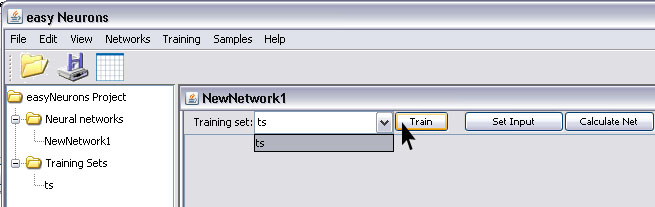
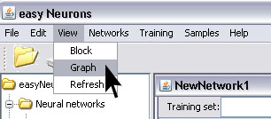

Adaline (ADAptive LInear NEuron) is simple two-layer neural network with only input and output layer, having a single output neuron.Output neuron receives input from all input neurons. All neurons in network have linear transfer functions (y=x), and network use Least Mean Squares (LMS) algorithm for learning. This network can be used to recognize patterns, data filtering, or to approximate linear function. Note that this network can be applied only to linear problems.
To create and train Adaline neural network with easyNeurons do the following:
Step 1. To create Adaline network, in main menu click Networks > Adaline
Step 2. Enter number of neurons in input layer, and click Create button.
This will create the Adaline neural network with two neurons in input and one in output layer. By default, all neurons will have Linear transfer functions.
Now we shall train this simple network, to learn from data. First we have to create the training set
Step 3. In main menu click Training > New Training Set to open training set wizard.
In the new training set dialog, Enter training set name, choose Supervised type of training set from drop down list. Then enter number of inputs (2) and outputs (1) as shown on picture below and click Next button.
Then create training set by entering values for training elements. Use Add row button to add new elements, and click OK button when finished.
Step 4. To start network training procedure, in network window select training set from drop down list and click Train button.

In Set Learning parameters dialog change default learning parameters. Set 0.00001 instead of 0.01 for Max error, and just click the Train button.
Training stopped on 974. iteration, with acceptable net error, whole number is not shown on picture, it is 9.99525696433276E-6.
Click on the Stop button to finish training.
Step 5. After the training is complete, you can test network by using Set Input button. This opens Set Network Input dialog in which you can enter input values for network separated with white space.
Note: Input vector size must match with network input dimension.
The result of network test is shown on picture below. We can see that network has learned the provided data, since the value of output neuron is 0.29 which is approximately to the desired output specified in training set 0.3
You can select graph view from main menu View > Graph to see different network view.

In graph view, you can turn on the display of activation levels and connection weights, change display layout and mouse mode so you can transform or zoom network.
You can use command buttons to inspect the networks behaviour. SetInput to set network input, Calculate Net to perform calculation for whole network, Reset to reset activation levels for all neurons to zero, and Randomize to randomize all network weights.